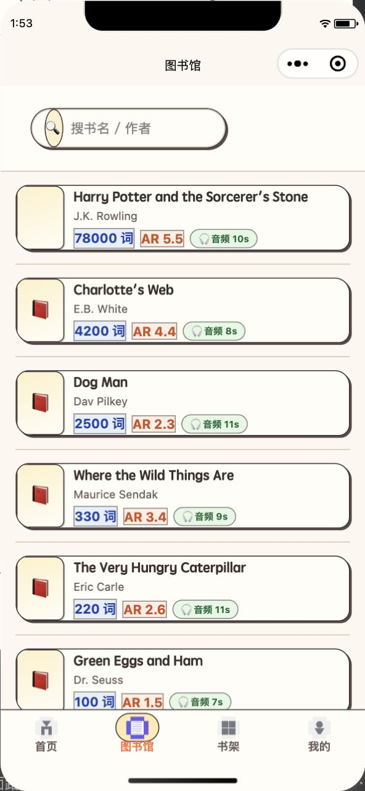
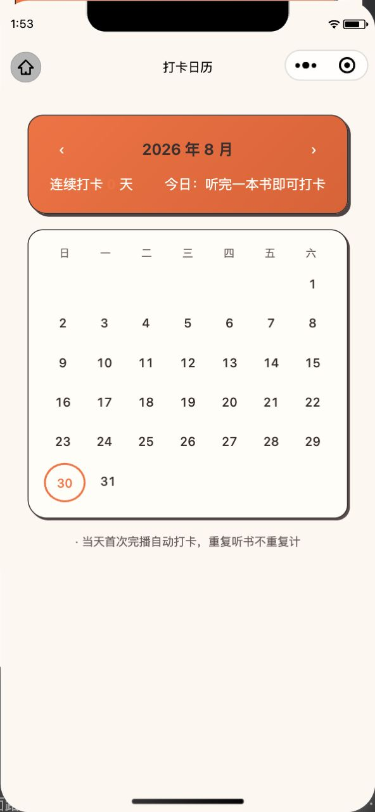
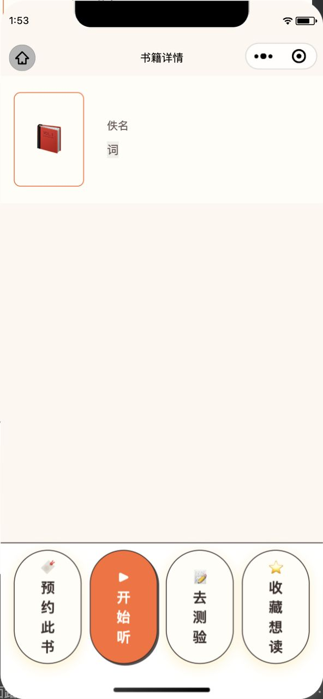

按用户要求，将三处修复重新截图验证一遍，全部通过。
问题：首次覆盖后书卡仍为半宽网格，且词数标签因旧样式残留 opacity:0.15 而半透明。
修复：改为全宽横排书卡 + 显式 opacity:1。

✅ 验证通过：标签不透明、三色贴纸清晰、横排卡布局正常。
问题：活力橙横幅上的大数字默认继承 --surface，在低对比度下曾被渲染成橙色，几乎看不见。
修复：显式指定 color:#FFFDF7 + text-shadow。

✅ 验证通过：白字在橙色横幅上清晰可读。
问题：将 secondary / fav 按钮背景改为 --surface 后，文字颜色仍为原样式 var(--surface)，导致白底白字看不见。
修复：显式指定 color:var(--fg)。

✅ 验证通过：四个按钮文字全部可读，主操作「开始听」橙色突出。